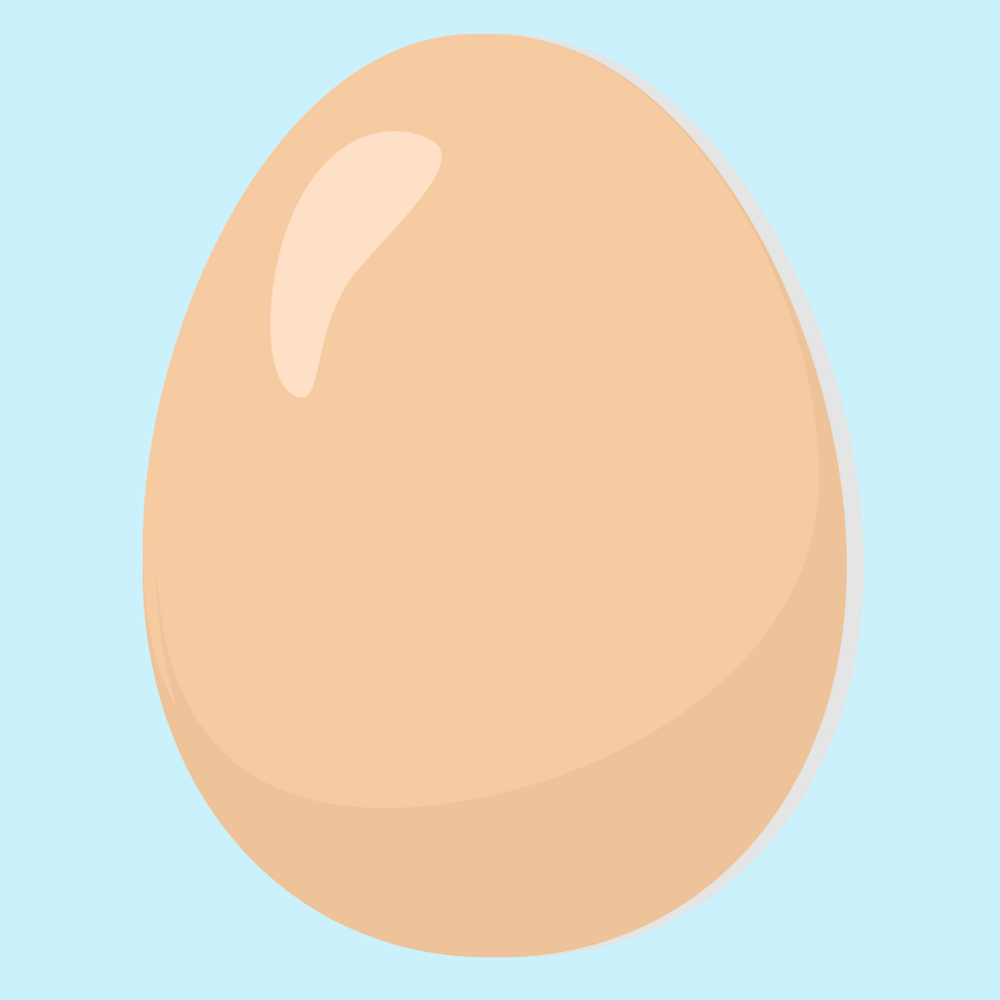

UIKit Project
This project was an Egg Timer App developed using Swift's UIKit framework, which makes use of timers and UIProgressBar to help users cook eggs perfectly every time.
By setting a timer, the app provides a visual progress bar that shows how much time is left until the egg is ready, based on the user's preference for soft, medium or hard boiled. The app's user interface was designed to be simple and intuitive, making it easy for users to quickly set their desired hardness.
The project helped me gain a deeper understanding of how timers work in Swift, as well as how to use UIProgressBar to create visual feedback for users.